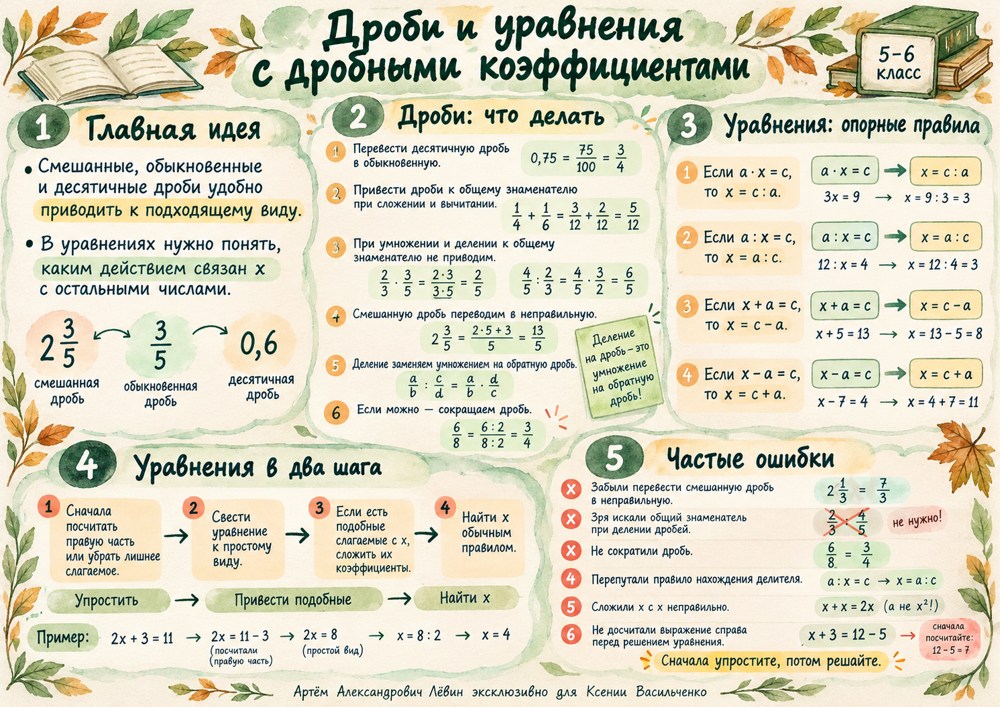

Урок 29 / 10 / 2026 · Повторение
Дроби и уравнения
Выбираем удобную запись числа, соблюдаем порядок действий и находим неизвестное за несколько осмысленных шагов.
Приведите числа к одному виду
Обыкновенные, десятичные и смешанные дроби можно преобразовать друг в друга. Выбирайте запись, с которой проще выполнить действие.
Сократите полученную дробь.
Умножьте целую часть на знаменатель и прибавьте числитель.
Если возможно, получите знаменатель 10, 100 или 1000.
1/2 = 0,5; 1/4 = 0,25; 3/4 = 0,75; 1/5 = 0,2; 1/8 = 0,125.
Общий знаменатель нужен не всегда
При сложении и вычитании приведите дроби к общему знаменателю. При умножении и делении используйте свойства произведения и обратную дробь.
Сложение с разными знаменателями
В примере общий знаменатель — 24.
Деление дробей
Замените деление умножением на обратную дробь. Сокращайте общие множители.
При умножении и делении дробей общий знаменатель искать не нужно. Смешанные числа заранее переводите в неправильные дроби; делитель должен отличаться от нуля.
Одно действие — один понятный шаг
Сначала работайте со скобками и степенями, затем с умножением и делением, после чего — со сложением и вычитанием. Пройдите готовые примеры в собственном темпе.
Шаг 1 · Исходное выражение
Сначала приведите десятичную дробь к обыкновенной.
Шаг 2 · Общий знаменатель
В скобках общий знаменатель 24; смешанное число записано неправильной дробью.
Шаг 3 · Деление заменено умножением
При делении переворачиваем вторую дробь. Сокращаем общие множители.
Шаг 4 · Результат
Одна четвёртая равна двадцати пяти сотым.
Шаг 1 · Исходное выражение
Квадрат относится ко всему смешанному числу.
Шаг 2 · Вычисляем степень
Одна целая одна пятая — это 1,2; квадрат равен 1,44.
Шаг 3 · Вычитаем
Вычитаем десятичные дроби, выравнивая запятые.
Шаг 4 · Результат
Умножаем делимое и делитель на 100.
Шаг 1 · Исходное уравнение
Сначала убираем добавленную дробь.
Шаг 2 · Отделяем неизвестный множитель
От единицы вычитаем три седьмых.
Шаг 3 · Простое уравнение
Теперь находим неизвестный множитель делением на четыре девятых.
Шаг 4 · Ответ и проверка
Проверка: 4/7 + 3/7 = 1.
В каждом сценарии меняется только один математический шаг. Посмотрите, почему преобразование допустимо, прежде чем переходить дальше.
Определите роль неизвестного
Найдите, каким компонентом арифметического действия является неизвестное. Если справа стоит выражение, сначала вычислите его значение.
Неизвестный множитель
При a ≠ 0.
Неизвестный делитель
При a ≠ 0 и c ≠ 0.
Неизвестное слагаемое
Из суммы вычтите известное слагаемое.
Неизвестное вычитаемое
Из уменьшаемого вычтите разность.
Пример. Неизвестный множитель
Разделите одну целую одну седьмую на две седьмых и сократите семёрки.
Пример. Неизвестный делитель
Два разделить на одну целую одну четвёртую — получится восемь пятых.
Пример. Два действия
Подставьте полученное значение в исходное уравнение: 4/7 + 3/7 = 1.
Складывайте коэффициенты
Подобные слагаемые имеют одинаковую буквенную часть. При их приведении складываются коэффициенты, а буква сохраняется.
Так уравнение с двумя слагаемыми, содержащими икс, превращается в уравнение с одним неизвестным множителем.
Пример с подобными слагаемыми
Сумма одной девятой и четырёх девятых равна пяти девятым.
При сложении подобных слагаемых буквы не перемножаются: x + x = 2x.
Проверьте, нет ли знакомой ошибки
- Перевод смешанного числа в неправильную дробь пропущен.
- При делении дробей ищут общий знаменатель.
- Меняют только делимое при делении десятичных дробей.
- Путают правило нахождения делителя.
- Не приводят подобные слагаемые перед решением.
10 задач для самостоятельной работы
Упражнения идут от простых преобразований к уравнениям с несколькими действиями. Ответы открывайте после собственного решения.
- 01
Переведите 0,75 в обыкновенную дробь, а 3/8 — в десятичную.
Показать ответ
- 02
Вычислите.
Показать ответ
- 03
Выполните деление.
Показать ответ
- 04
Вычислите.
Показать ответ
- 05
Вычислите.
Показать ответ
- 06
Решите уравнение.
Показать ответ
- 07
Решите уравнение.
Показать ответ
- 08
Решите уравнение.
Показать ответ
- 09
Решите уравнение.
Показать ответ
- 10
Решите уравнение.
Показать ответ
Пособие, исходник и постер
Теория, решения и таблица ответов доступны в пособии. Визуальная памятка объединяет основные правила занятия.

